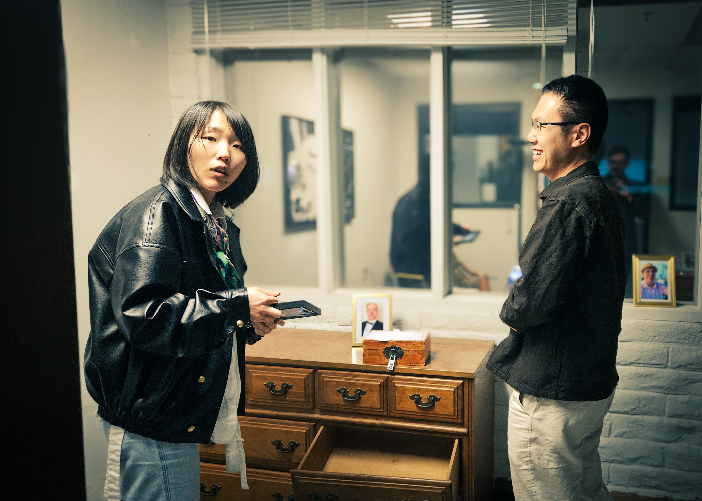
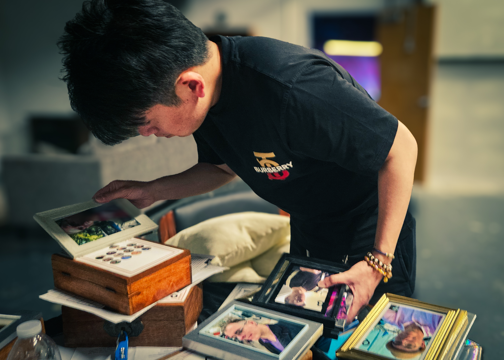
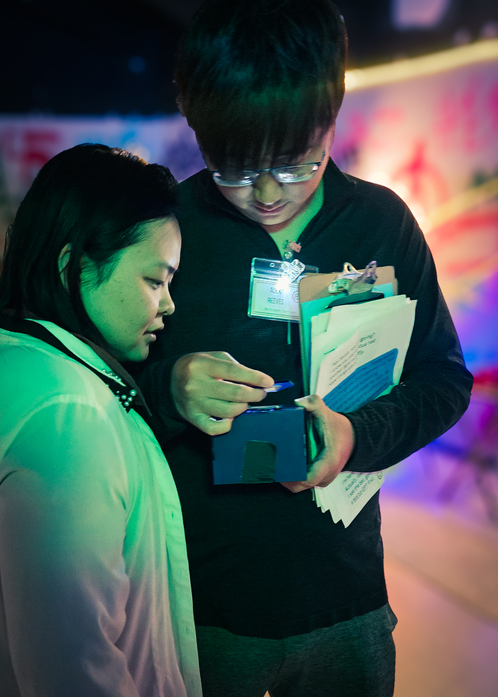
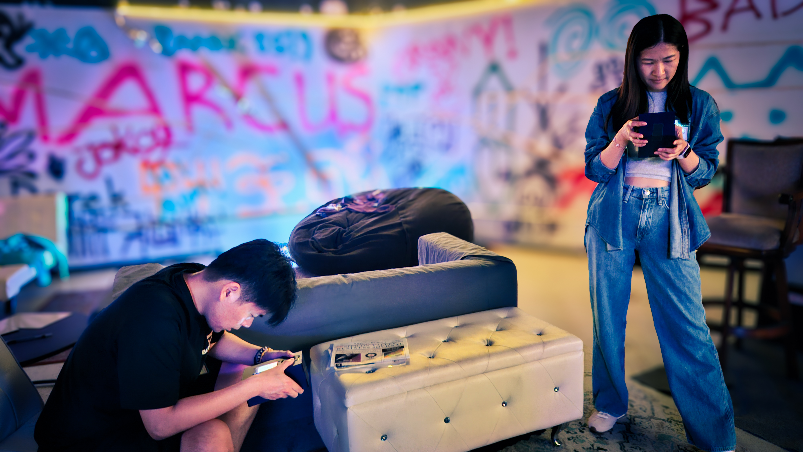

The Room Litigated a Marriage
Marcus Blackwood was dead, the fight to force him out of the company he founded already underway, a black market paying millions to bury the memories he extracted from his guests. The eight investigating spent the morning on the affair, the divorce, the money. They named his widow, six to three.

Marcus Blackwood is dead, and I was not in the room when they decided why.
I have been chasing this man the better part of a year. When it finally broke open, I worked it the way I work everything now: off-site, by tip, watching the evidence arrive from people I mostly could not see. What they were sorting through was not a body. It was a pile of extracted memories, the kind NeurAI learned to pull out of a human skull and freeze on a screen. Most of them had been carved out of the same people now squinting at them.
By the time the police were at the door, the room had a name. Sarah Blackwood. The widow. Six votes to three, an overdose theory crossed out in between.
Two of them signed what they sent me. The rest came in the dark.
THE STORY
Start with the door nobody was supposed to find.
A memory a source routed to me shows Remi Whitman watching Marcus slip through a hidden door at the edge of the party, into the half of the warehouse he had quietly turned into somewhere to live and work. She followed. The record shows him so high he could barely finish a sentence, waving her in, telling her to help herself. She took a thumb drive and went looking for Alex.

That back room is where this story actually lived, behind the one the partygoers were allowed to see. Out front, two things were ending at once, and neither waited for the other.
One was a marriage. The memory shows Sarah had already told Marcus she was leaving. The record shows what he did with the warning: cleared out their shared account before she could touch it, corporate-shielded the rest, and set her up to walk away with nothing. In the same crowd, another memory shows Jess Kane trying to get two minutes alone with him and getting walked past like a coat rack.
The other was Marcus' grip on his own company, and unlike the marriage, that ending kept a schedule.
That is Vic Kingsley, the venture capitalist who had staked his new firm on Marcus, deciding to cut him loose and put Alex Reeves in his chair. Not after the death. Before it.
Why Alex? Because the memory shows Alex had a claim. He says he built the code Marcus sold as BizAI, then watched Marcus do it again with NeurAI. "Just because he says it works," his memory has him telling Remi, "doesn't mean it works. If he got away with it once, he'll do it again." He was not the only one. Another recovered memory shows Zia Bishara setting Marcus' "proprietary" NeurAI code beside her own and finding the same variable names, the same comments. "Marcus didn't even bother changing your notes." The genius was borrowed, and more than one person could prove it.
So when the night turned violent, it turned on exactly that. The record shows Alex threw the punch. It shows Vic out on the sidewalk afterward, pressing a designer scarf to Marcus' bleeding nose while he fired him. And the bartender's memory caught what carried on the wind when the two men stepped outside.
He's out. You're in. It's done. Sarah's name already in the air, hours before the room would land on it. Before Marcus' experiment made everyone forget.
Then, near two in the morning, the night did the thing the whole company was built to do.
That memory is Marcus' own. It shows him drugging the people still standing and running his extraction on them, calling them drugged zombies, noting almost with irritation that one of them, Sarah, is crying at a wall. Remember the extracted memories the room fought over all morning? This is where they came from. Not statements. Not confessions. Experiences cut out of people who had been drugged into saying yes, by the man they were now investigating. The first crime of the morning happened before Marcus died, and everyone in the room was a victim of it.
FOLLOW THE MONEY
Here is the part the verdict walked past.
The investigation did not only expose memories. It buried them. Blake, the NeurAI operative running the room's quiet side, paid people to hand their memories over instead of putting them on the record. Bury one, and the money lands in an account under whatever name you pick. By the time the police arrived, that ledger had paid out more than three million dollars.
Four of every five of those dollars landed in one account. North of two and a half million, including the two single largest payouts of the night, all parked under a single word: Cheating. And in the deliberation, by every account that reached me, Sarah claimed that account as hers. She offered it as her defense. She had money of her own, she said. Why would she kill for more?
Sit with that. The biggest payday on Blake's ledger went to the woman the room was about to blame, and she raised her hand to say so. The room heard cheating and pictured a marriage. The memories I did get to read were about cheating of a different kind: a faked AI, borrowed code, investors sold a story. I cannot tell you which memories went into that account, or any other. Four of the five names stayed anonymous, and anonymity was exactly what Blake was selling. I can only give you the shape, and the shape is that silence paid better than the truth, and it paid best to the widow.
In the hours since they filed out of that warehouse, someone leaked me two draft emails from the NeurAI board. One offers Sarah the chief executive's chair, the moment she is clear of her legal trouble. The other offers Alex the chief technology job he has been demanding in his lawsuit, if he drops the suit. That is the carrot. The email also implies the stick. NeurAI is in possession of the data from the buried memories.
And then there's Sarah. The company is preparing to crown the woman who, by her own word, was paid more than anyone to keep its secrets buried. That is not how you treat a suspect. That is how your future CEO proves their loyalty to the business.
THE PLAYERS
Two of the people in that room were reporters, the same as me.
Taylor Chase and Ashe Motoko spent the morning feeding me evidence, on the record and by name, while the rest of it arrived anonymous. I am grateful. I am also not going to pretend I do not understand them.

There is history under that. Ashe wrote an exposé on Marcus once. Taylor made sure it never ran, in exchange for an exclusive, and signed the email about it "Reality is negotiable." This morning the math flipped: the truth was finally worth more told than buried, and the two of them reached for it at the same time. Make of that what you will.
Some of them the record treats less simply than the room did. For a stretch the room floated Jess Kane as a suspect of its own, before crossing her out: pregnant by Marcus, turned away every time she tried to talk to him. Motive enough, the thinking went. The memories show a harder picture. Marcus did walk past her when she begged for two minutes. But an earlier memory shows he had used her well before that, coaxing her into his extraction chair with a story about an acting gig and taking a memory she can no longer reach. The room saw a woman with a reason to want him dead. The record also shows a woman he had already robbed.
And Quinn Sterling, who synthesized the compound at the bottom of all of this and never stopped paying for it. She was the one who raised the possibility the room eventually crossed out: that nobody killed Marcus at all, that the drug did, the one he had bullied out of her and then could not stop taking. The room moved on. The memories suggest the question deserved better.
The three who spent the night dismantling Marcus from the inside, Vic, Alex, and Remi, barely needed the morning's help. By the time the room sat down, the memories that mapped the takeover were already on the board, carried there by other hands.
"You can have him. But that baby deserves better. We both do."
Sarah Blackwood, from her extracted memory
That is Sarah, in the memory that shows her finding Jess crying in a bathroom and understanding whose baby it was. Whatever the ledger says about her, the room voted on a woman it had already decided it understood.
WHAT'S MISSING
I can name the accounts and the totals. I cannot tell you which memory went into which one, or whose hands carried it to Blake. Four of the five accounts stayed anonymous, and anonymity was the product. The blanks are not holes in my reporting. They are the thing that got bought.
And the bought silence is the smaller half. Some of what is missing was not sold, it was taken. The drug did not copy memories so much as carve them out, and it left holes where they had been. Jess Kane cannot tell you what Marcus did to her in that chair; the memory was lifted clean. The people who spent the morning rebuilding the night were working around gaps in their own heads.
And what was bought did not vanish either. Every memory sold this morning sits in NeurAI's hands now, in the vault the company can open or keep shut depending on who cooperates. The blanks have an owner, and it is hiring.
And then there are the questions the room set down itself. The overdose theory, wiped off the whiteboard, even though the memories are thick with Marcus poisoning himself on the drug he forced out of Quinn. The takeover, parked under Vic's name and outvoted, even though it was the only motive that came with paperwork. No one had time to chase all of it. With the clock running out, the room settled on the version it could agree on, and left the rest unfinished.
CLOSING
The room chose Sarah. Six votes to three, minutes before the police came in. That was their story, and they had their reasons. I am after a different question.

Because the verdict settles a death and steps around everything it sat inside. A company spent the night cutting out the man whose name was on the wall, and by morning it was handing the pieces around: the lab to the partner who sued him, the chair to the widow, once she is clear of the accusation the room just handed her. The memories that might explain any of it were pulled out of drugged people and sold for quiet to the same company now deciding who gets promoted. The room that reached the verdict could not remember the night it was ruling on. And the three of us who brought it to you stood to gain from the telling.
That is the part that should keep you up. Not who killed Marcus Blackwood, but what his company learned to do to people, and how cheaply the rest of us agreed to look away. I am still counting who walked out of that warehouse richer. When I am finished, I will tell you who profited from the silence, and what they did with it next.